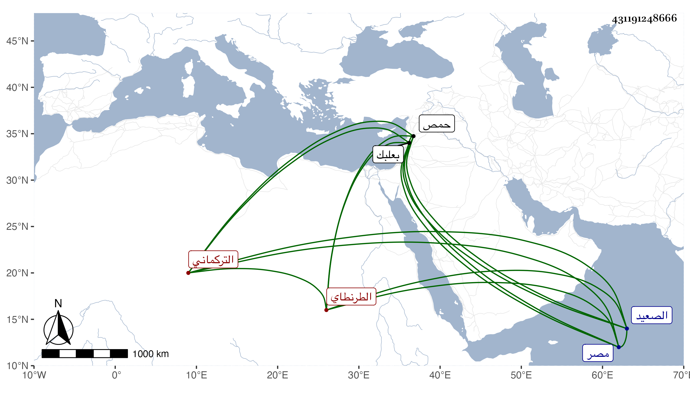

0902Sakhawi.DawLamic.ITO20230111-ara1.EIS1600.431191248666
Biography ID: 431191248666
311
جنتمر بن عبد الله التركماني الطرنطاي وهو تخفيف أيضا من جان تمر . كان قد ولي نيابة حمص ونيابة بعلبك وأسر في المحنة العظمى ثم خلص من الأسر بعد مدة وحضر إلى مصر فتولى كشف الصعيد فقتله عرب ابن عمر في صفر سنة أربع ، وقتلوا من حاشيته مقدار مائتي نفس ونهبوا جميع ما كان معهم من الانفال والاحمال والخيول . وكان حسن المحاضرة بشوشا كريما شجاعا مقداما مع ظلم كثير وعسف . ذكره شيخنا في أنبائه .
